S'enfoncer dans les terres...
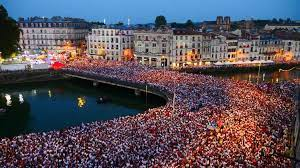
Fetes de Bayonne

Aquarium San Sebastian ou Biarritz
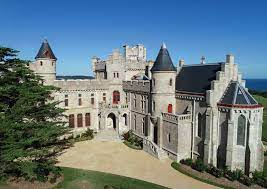
Chateau d'Abbadia, Hendaye
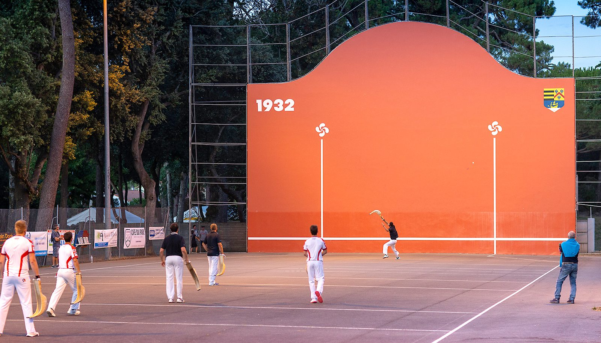
Pelote basque
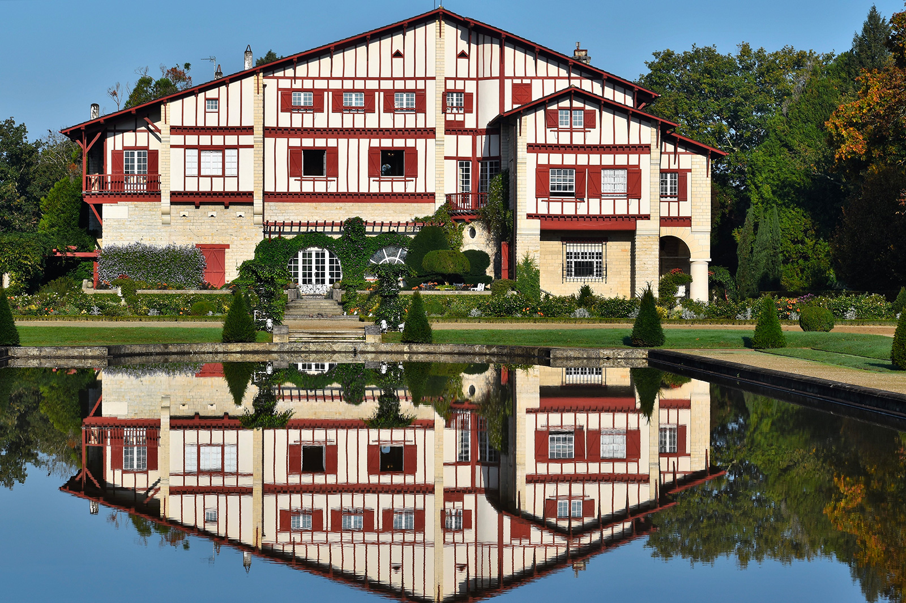
Villa Arnaga, Cambo les Bains
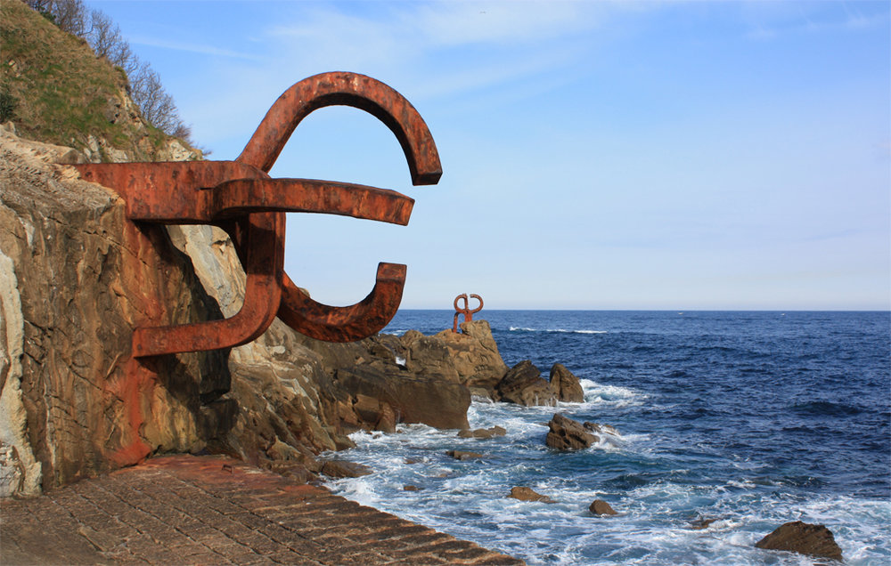
Peine del Viento XV, San Sebastian

La Rhune en petit train ou à pied
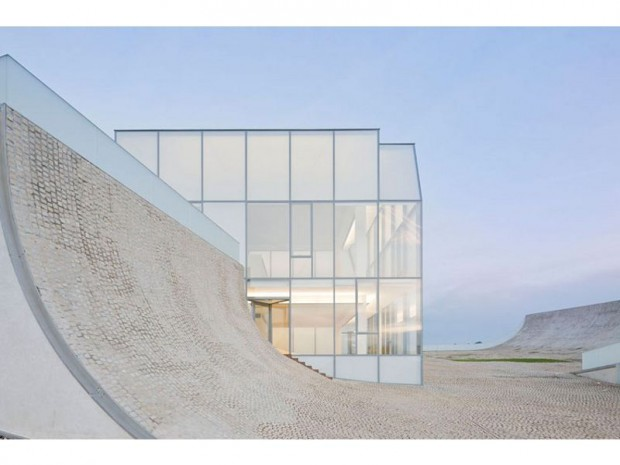
Cité de l'Océan, Ilbarritz
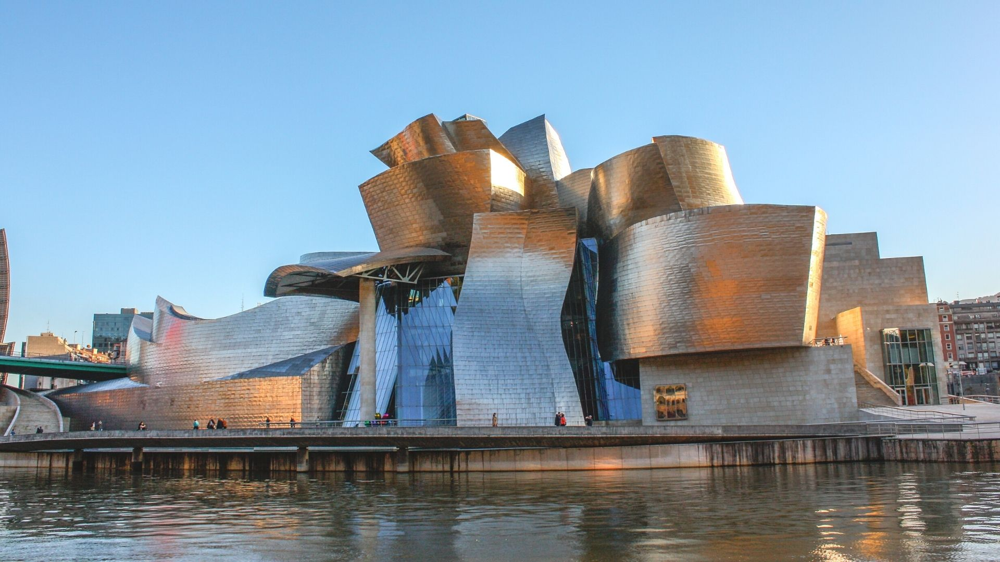
Musée Guggenheim, Bilbao
Chateau d'Abbadia, St-Jean-de-Luz
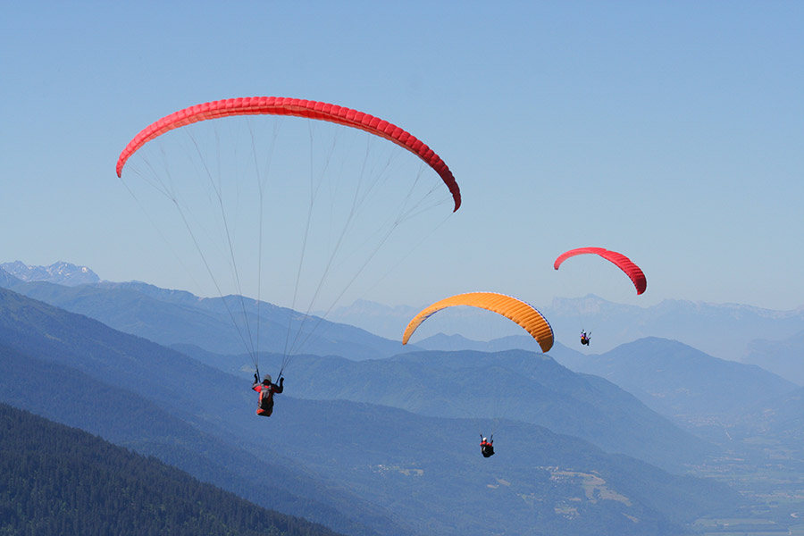
Parapente

Musée du Gateau Basque, Sare
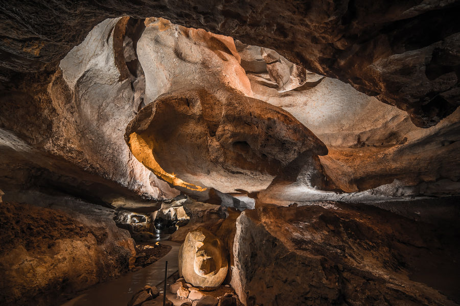
Grottes de Sare

Grottes d'Isturitz
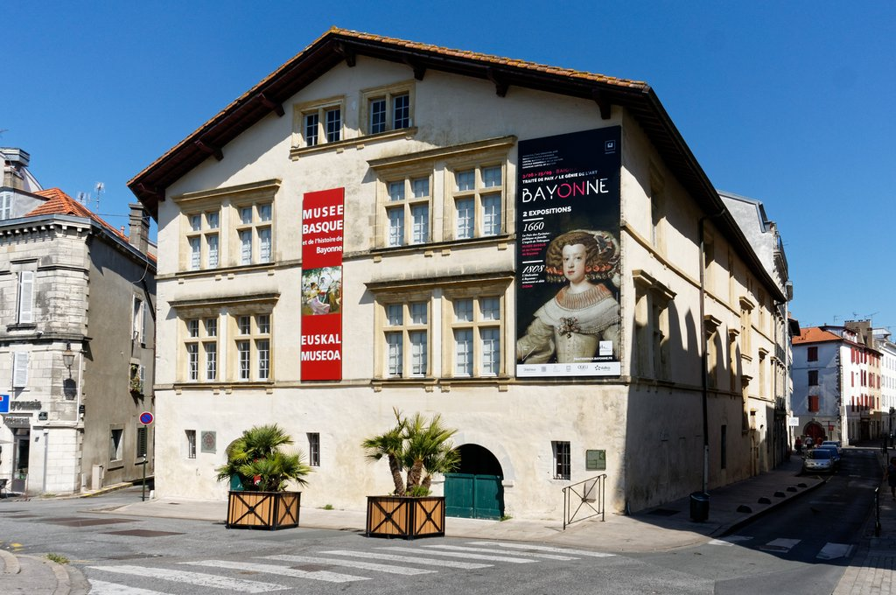
Musée basque, Bayonne
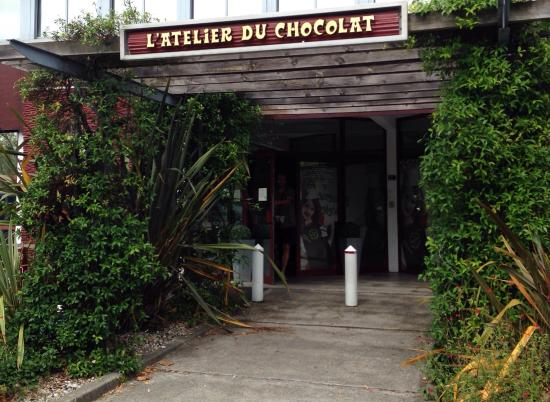
Atelier du chocolat, Bayonne
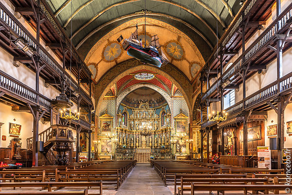
Eglise Saint-Jean-Baptiste, St-Jean-de-Luz